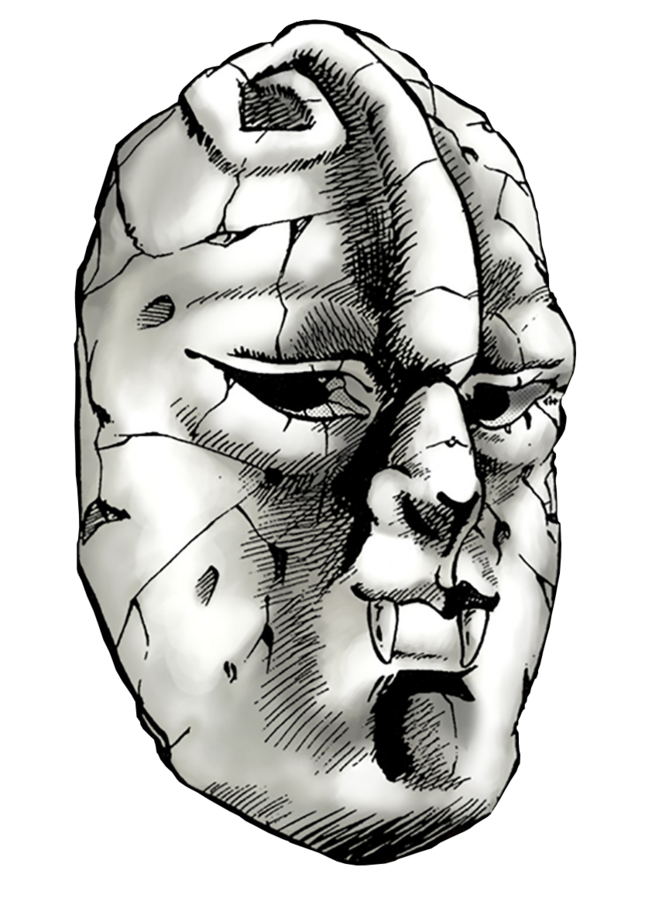

Jojo no Kymyou na Bouken
Jojo's Bizarre Adventure

JoJo no Kimyō na Bōken (JoJo's Bizarre Adventure) é uma das franquias mais influentes e originais da cultura pop japonesa. Criada por Hirohiko Araki em 1987, a obra acompanha as aventuras da família Joestar ao longo de diferentes gerações, cada uma enfrentando desafios extraordinários, inimigos poderosos e mistérios sobrenaturais.
Conhecida por seu estilo artístico marcante, personagens carismáticos e batalhas estratégicas, a série se destaca por reinventar sua narrativa a cada nova parte. Desde confrontos envolvendo artes marciais e energia vital até os famosos Stands — manifestações espirituais com habilidades únicas —, a franquia conquistou milhões de fãs ao redor do mundo.
Ao longo de décadas, JoJo's Bizarre Adventure expandiu-se para além dos mangás, recebendo adaptações em anime, jogos, light novels e diversos produtos derivados. Sua influência pode ser percebida em inúmeras obras contemporâneas, além de ter se tornado um fenômeno cultural reconhecido por suas poses icônicas, referências musicais e criatividade sem limites.
Neste site, você encontrará informações sobre a história da franquia, seus personagens, partes, adaptações e curiosidades que fazem de JoJo no Kimyō na Bōken uma das séries mais memoráveis da indústria dos mangás e animes.